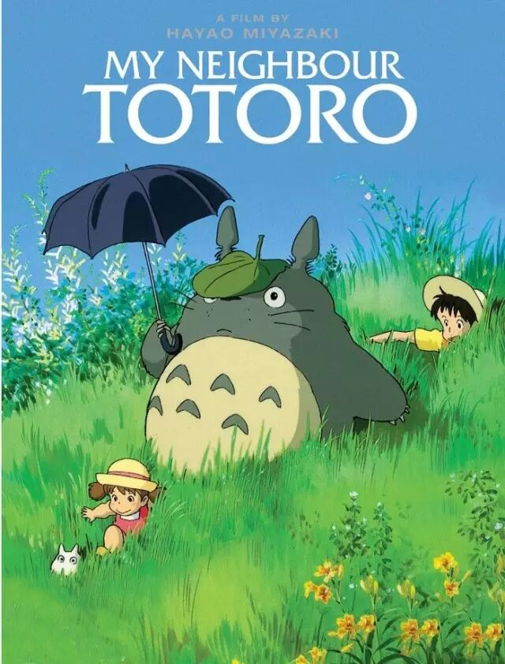
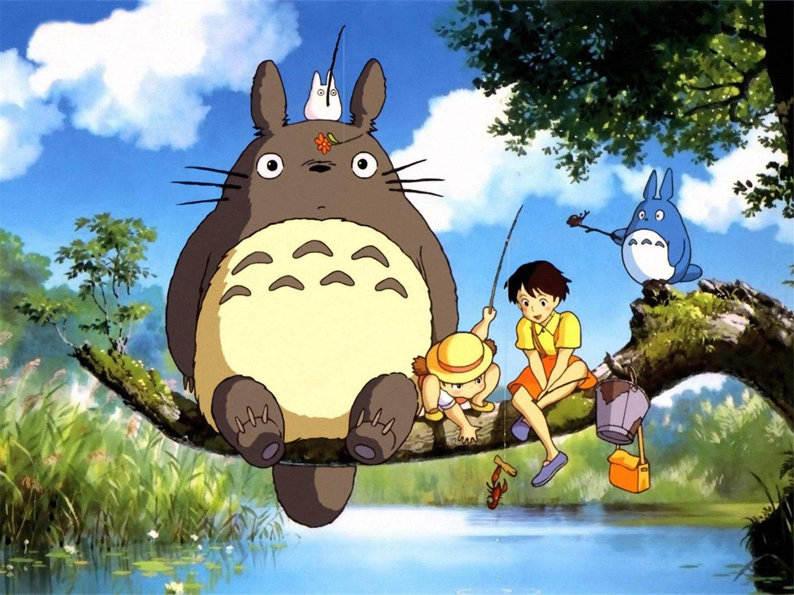
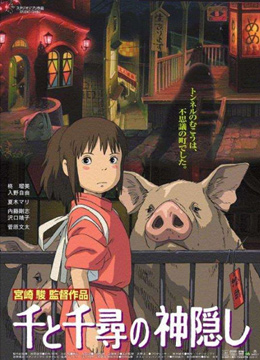
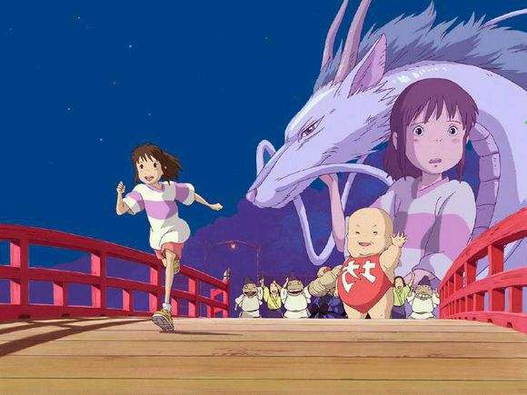
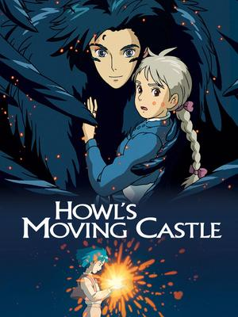
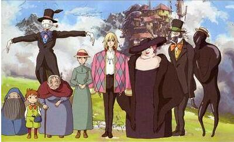
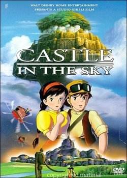
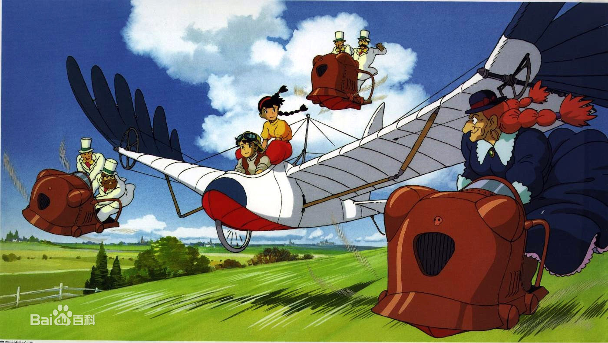

宫崎骏，1941年1月5日出生于东京都文京区,日本动画师、动画制作人、漫画家、动画导演、动画编剧。毕业于日本东京学习院大学政治经济部。19
1963年进入东映动画公司，从事动画师工作。1971年加入手冢治虫成立的“虫Production动画部”。1974年加入Zuiyou映像与高田勋、小田部羊一共同创作《阿尔卑斯山的少女》。1979年转入东京电影新社创作了自己首部电影《鲁邦三世卡里奥斯特罗之城》。
1985年与高田勋、铃木敏夫共同创立吉卜力工作室。1986年执导《天空之城》，该片获得第41回每日电影奖大藤信郎赏等6项大奖。1988年执导《龙猫》，该片荣获第13回报知电影奖最佳导演奖等24项大奖。2001年执导《千与千寻》，该片荣获第75届奥斯卡金像奖最佳动画长片奖及第52届柏林电影节最高荣誉“金熊奖”等9项大奖 。2004年执导《哈尔的移动城堡》，该片荣获第9届好莱坞电影奖最佳动画片奖等8项大奖 。
2013年执导《起风了》该片荣获第37届日本电影学院奖最优秀动画作品奖等8项大奖，也是其最后长篇作品。同年9月6日宣布引退。2014年11月8日荣获第87届奥斯卡金像奖终身成就奖 。
1963年进入东映动画公司，从事动画师工作。1971年加入手冢治虫成立的“虫Production动画部” 宫崎骏 1922年，法国影评家埃利·福尔满含感情的预言：“终有一天动画片会具有纵深感，造型高超，色彩有层次……会有德拉克洛瓦的心灵、鲁本斯的魅力、戈雅的激情、米开朗基罗的活力。一种视觉交响乐，较之最伟大的音乐家创作的有声交响乐更为令人激动。”
My Neighbor Totoro小月的母亲生病住院了，父亲带着她与四岁的妹妹小梅到乡间的居住。她们对那里的环境都感到十分新奇，也发现了很多有趣的事情。她们遇到了很多小精灵，她们来到属于她们的环境中，看到了她们世界中很多的奇怪事物，更与一只大大胖胖的龙猫成为了朋友。龙猫与小精灵们利用他们的神奇力量，为小月与妹妹带来了很多神奇的景观，令她们大开眼界。 妹妹小梅常常挂念生病中的母亲，嚷着要姐姐带着她去看母亲，但小月拒绝了。小梅竟然自己前往，不料途中迷路了，小月只好寻找她的龙猫及小精灵朋友们帮助
家的途中，一家人发生了意外。他们进入了汤屋老板魔女控制的奇特世界——在那里不劳动的人将会被变成动物。千寻的爸爸妈妈因贪吃变成了猪，千寻为了救爸爸妈妈经历了很多磨难，在期间她遇见了白龙，一个既聪明又冷酷的少年，在经历了很多事情之后，千寻最后救出了爸爸妈妈，拯救了白龙。
该片改编自英国的儿童小说家黛安娜·W·琼斯的《魔法师哈威尔与火之恶魔》。该片以战争前夜为背景，描述住在小镇的三姐妹，其中的大姐苏菲是位制作帽子的专家，但她却因此得罪了女巫，从18岁的美少女变成了90岁的老太婆。她惊恐地逃出家里，但又进入了一座移动的城堡，她和不能与人相恋但懂魔法的哈尔，谱出了一段战地恋曲，并且和城堡里的其他人一起想办法解开身上的魔咒。其中的城堡部分带有19世纪末钢铁工厂的特殊风格。
该片讲述的是主人公少女希达和少年巴鲁以及海盗、军队、穆斯卡等寻找天空之城拉普达（Laputa）的历险记。
不管前方的路有多苦，只要走的方向正确，不管多么崎岖不平，都比站在原地更接近幸福。 《千与千寻》
生命可以随心所欲，但不可以随波逐流。 《猫的报恩》
有些烦恼，丢掉了，才有云淡风轻的机会。 《龙猫》
如果把童年再放映一遍，我们一定会先大笑，然后放声痛哭，最后挂着泪，微笑着睡去。 《龙猫》
我说不出来为什么爱你，但我知道，你就是我不爱别人的理由。
我不知道离别的滋味是这样凄凉，我不知道说声再见要这么坚强。 I do not konw the taste of separating is so bleak, I do not konw to say goodbay so strong.